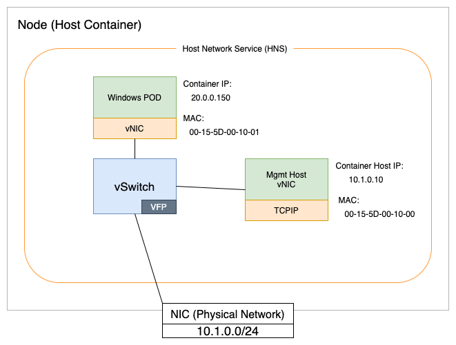

윈도우 네트워크¶
윈도우 컨테이너 네트워크 개요¶
윈도우 컨테이너는 리눅스 컨테이너와 근본적으로 다릅니다. 리눅스 컨테이너는 네임스페이스, 유니온 파일 시스템 그리고 cgroup 등의 구성 요소로 이루어져 있습니다. 윈도우에서는 이런 구성 요소를 Host Compute Service (HCS)에 의해 도코에서 추상화 됩니다. HCS는 윈도우에서 컨테이너 구현을 위한 API 레이어 역할을 합니다. 또한 윈도우 컨테이너는 노드에서 네트워크 토폴로지를 정의하는데 Host Network Service(HNS)를 활용합니다.

네트워킹 관점에서 보면 HCS와 HNS는 윈도우 컨테이너가 가상 머신처럼 작동하게 만듭니다. 예를 들어, 위 다이어그램에 표시된 것 처럼 각 컨테이너에는 Hyper-V virtual switch(vSwitch)에 연결된 가상 네트워크 어댑터(vNIC)가 있습니다.
IP 주소 관리¶
Amazon EKS의 노드는 Elastic Network Interface(ENI)를 사용하여 AWS VPC 네트워크에 연결합니다. 현재, 윈도우 워커 노드당 단일 ENI만 지원 됩니다. 윈도우 노드의 IP 주소 관리는 컨트롤 플레인에서 실행되는 VPC Resource Controller에서 수행됩니다. 윈도우 노드의 IP 주소 관리 워크플로에 대한 자세한 내용은 여기에서 확인할 수 있습니다.
윈도우 워커 노드가 지원할 수 있는 파드 수는 노드의 크기와 사용 가능한 IPv4 개수에 따라 달라집니다. 노드에서 사용 가능한 IPv4 개수는 아래와 같이 계산할 수 있습니다: - 기본적으로 ENI에는 보조(Secondary) IPv4 주소만 할당 됩니다. 다음과 같은 경우 -
하나의 IPv4 주소가 ENI의 primary 주소로 사용되므로 파드에 할당할 수 없으므로 총 개수에서 1을 뺍니다. - 만약 prefix delegation feature을 활성화하여 파드의 밀집도를 높이도록 구성된 경우에는 - VPC Resource Controller는 보조 IPv4 주소를 할당하는 대신/28 prefixes를 할당하므로 사용 가능한 전체 IPv4 개수가 16배 증가합니다.
위 공식을 사용하면 아래와 같이 m5.large 인스턴스의 최대 파드 수를 계산할 수 있습니다- - 기본적으로 보조 IP 모드에서 실행하는 경우 -
-prefix delegation를 사용하는 경우 -
인스턴스 유형에 따른 사용 가능한 IP 개수에 대한 자세한 내용은 IP addresses per network interface per instance type를 참조 바랍니다.
또 다른 주요 고려 사항은 네트워크 트래픽의 흐름입니다. 윈도우를 사용하면 100개가 넘는 서비스가 있는 노드에서 포트가 고갈 될 위험이 있습니다. 이 상태가 발생하면 노드에서 다음 메시지와 함께 오류가 발생하기 시작합니다:
"Policy creation failed: hcnCreateLoadBalancer failed in Win32: The specified port already exists."
이 문제를 해결하기 위해 Direct Server Return(DSR)을 활용합니다. DSR은 비대칭 네트워크 부하 분산을 구현한 것입니다. 즉, 요청 트래픽과 응답 트래픽은 서로 다른 네트워크 경로를 사용합니다. 이 기능은 Pod 간의 통신 속도를 높이고 포트 고갈 위험을 줄입니다. 따라서 윈도우 노드에서 DSR을 활성화 하는 것이 좋습니다.
DSR은 Windows Server SAC EKS Optimized AMIs에서 기본적으로 활성화 됩니다. Windows Server 2019 LTSC EKS Optimized AMI의 경우, 아래 스크립트를 사용하고 eksctl 노드그룹의 amiFamily로 Windows Server 2019 Full 또는 Core를 사용하여 인스턴스 프로비저닝 중에 이를 활성화해야 합니다. 자세한 내용은 eksctl custom AMI를 참조 바랍니다.
nodeGroups:
- name: windows-ng
instanceType: c5.xlarge
minSize: 1
volumeSize: 50
amiFamily: WindowsServer2019CoreContainer
ssh:
allow: false
<powershell>
[string]$EKSBinDir = "$env:ProgramFiles\Amazon\EKS"
[string]$EKSBootstrapScriptName = 'Start-EKSBootstrap.ps1'
[string]$EKSBootstrapScriptFile = "$EKSBinDir\$EKSBootstrapScriptName"
(Get-Content $EKSBootstrapScriptFile).replace('"--proxy-mode=kernelspace",', '"--proxy-mode=kernelspace", "--feature-gates WinDSR=true", "--enable-dsr",') | Set-Content $EKSBootstrapScriptFile
& $EKSBootstrapScriptFile -EKSClusterName "eks-windows" -APIServerEndpoint "https://<REPLACE-EKS-CLUSTER-CONFIG-API-SERVER>" -Base64ClusterCA "<REPLACE-EKSCLUSTER-CONFIG-DETAILS-CA>" -DNSClusterIP "172.20.0.10" -KubeletExtraArgs "--node-labels=alpha.eksctl.io/cluster-name=eks-windows,alpha.eksctl.io/nodegroup-name=windows-ng-ltsc2019 --register-with-taints=" 3>&1 4>&1 5>&1 6>&1
</powershell>
DSR 활성화 절차에 대한 자세한 내용은 Microsoft 네트워크 블로그 및 AWS 윈도우 컨테이너 워크샵에서 확인할 수 있습니다.

이전 버전의 윈도우를 사용하면 DSR을 지원하지 않으므로 포트가 고갈될 위험이 높아집니다.
Container Network Interface (CNI) 옵션¶
AWS VPC CNI는 윈도우 및 리눅스 워커 노드를 위한 사실상 표준(de facto)의 CNI 플러그인입니다. AWS VPC CNI는 많은 고객의 요구를 충족하지만, IP 주소 고갈을 방지하기 위해 오버레이 네트워크와 같은 대안을 고려해야 하는 경우가 있을 수 있습니다. 이런 경우 AWS VPC CNI 대신 Calico CNI를 사용할 수 있습니다. Project Calico는 Tigera에서 개발한 오픈 소스 소프트웨어로, EKS와 함께 작동하는 CNI를 포함하고 있습니다. EKS에 Calico CNI를 설치하는 방법은 Project Calico EKS 설치 페이지에서 확인 할 수 있습니다.
네트워크 정책¶
Kubernetes 클러스터의 파드 간 개방형 통신의 기본 모드에서 네트워크 정책을 기반으로 액세스를 제한하는 것으로 변경하는 것이 모범 사례로 간주됩니다. 오픈소스 Project Calico는 Linux와 Windows 노드 모두에서 작동하는 네트워크 정책을 강력하게 지원합니다. 이 기능은 별개이며 Calico CNI 사용에 의존하지 않습니다. 따라서 Calico를 설치하여 네트워크 정책 관리에 사용하는 것이 좋습니다.
EKS에 Calico를 설치하는 방법에 대한 내용은 Amazon EKS Calico 설치에서 확인할 수 있습니다.
또한, 보안 모범 사례 - 네트워크 섹션의 내용은 Windows 워커 노드가 있는 EKS 클러스터에도 동일하게 적용되지만, "파드용 보안 그룹"과 같은 일부 기능은 현재 Windows에서 지원되지 않습니다.